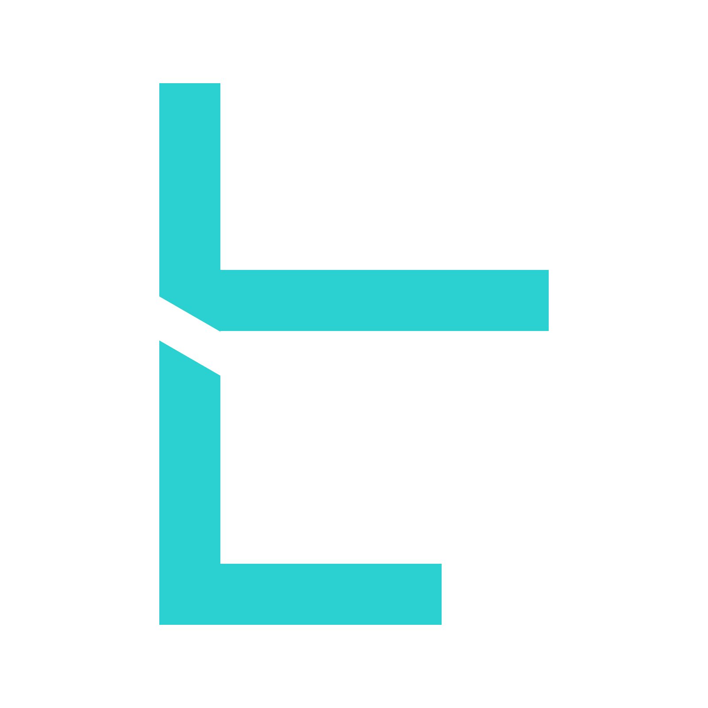

Customer-Facing Platforms
Product interfaces, portals, and SaaS foundations designed for stability, usability, and long-term maintainability.

Independent Technology Studio
BreachLabs Technologies builds structured web platforms and business-focused digital systems. We help teams strengthen foundations, improve reliability, and ship platforms that remain stable as usage grows.
Status: This site is under active development. Work examples and updates will be published progressively.
We build web platforms that support growth, improve operational clarity, and remain reliable under real usage.
Product interfaces, portals, and SaaS foundations designed for stability, usability, and long-term maintainability.
Admin panels, internal tools, workflow systems, and dashboards that reduce friction and improve decision-making.
Reliability upgrades, performance improvements, and structured refactors that strengthen platforms as traffic and complexity grow.
A structured delivery flow focused on reliability, measurable improvements, and predictable outcomes.
Understand requirements, identify failure points, map risks, and establish success criteria before making changes.
Prioritise reliability: fix breakpoints, improve consistency, reduce regressions, and tighten the platform baseline.
Refine performance and maintainability, reduce complexity, and strengthen the platform for growth and change.
Document decisions, provide handover clarity, and keep systems predictable with ongoing improvements where needed.
A selection of platforms, systems, and releases will appear here as they become public.
Reliability-focused restructuring and upgrades for growth. Public notes and details will be added progressively.
Business tooling designed to reduce friction and improve workflow visibility. Public references will be added as available.
Technology is strongest when it is predictable, reliable, and designed to evolve without breaking.
BreachLabs exists to build structured platforms—systems that scale without chaos and deliver outcomes without noise.
We combine disciplined engineering with practical experimentation, turning what works into stable products and dependable systems.
For platforms, stabilisation, collaboration, or general enquiries:
If you can share a short brief (goals, current stack, timeline), it helps us respond with clarity.